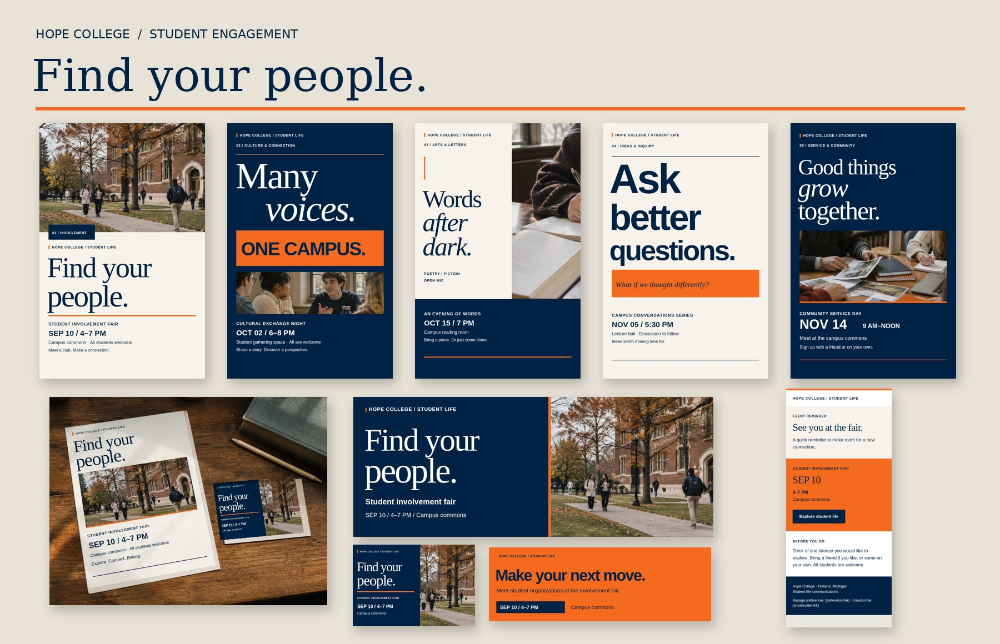
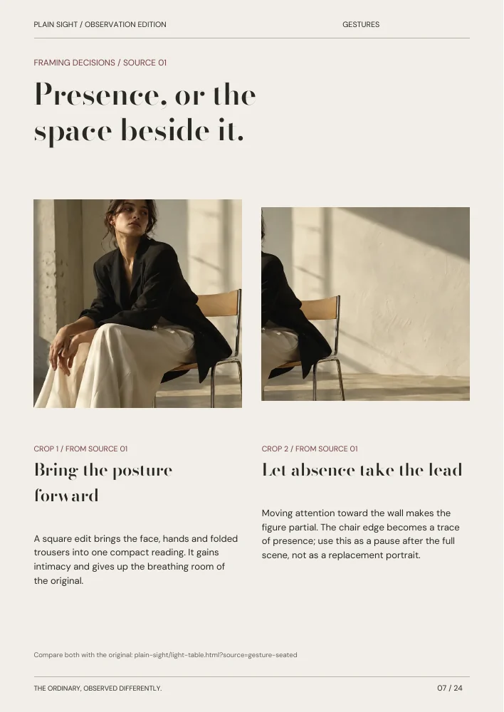

Jocelyn Martinez · Selected work
Graphic design.
Campus communications, studio campaign production, responsive email and editorial publications.
Beauty / CPG / Multichannel marketing
DERMÉA.
Make room for moisture. A fictional clinical skincare launch across ecommerce, eight HTML emails, nine ad layouts, marketplace and retail education.

Campus marketing / Print / Email
Hope College.
Find your people. A coordinated student engagement design system across campus posters, responsive email layouts, print collateral and digital campaign graphics.

Retrospective portfolio reconstruction inspired by student organization design experience; illustrative event information and campus imagery.
Campaign production
PROOF.
“Good ideas deserve good proofs” occupies a different shape in each format. Compare the full compositions, then switch on the headline boundaries to inspect the typesetting.


Open another format


Independent concept. The studio imagery is AI-generated. Both compositions open as editable SVG files. The email is an unsent concept with demo links.
Email design & production
BRUME
Before the reader sees a button, they see what the lamp does to a room.
The email moves from the lamp in a room to the edge of the glass and then to a hand for scale. Each study opens its corresponding finish in the campaign.
Independent lighting concept with AI-generated imagery. The headline and button are live text. The sample was previewed in a browser. Its finish links open the corresponding product study.
Publication design
PLAIN SIGHT
I used a page turn to change what the reader notices. These consecutive spreads come from Gestures, the opening study in my 24-page independent publication. The portraits are AI-generated. The crops, sequence, and typography are my editorial work.


I left the sunlit wall beside the seated figure. The two crops opposite show how much closer the same person feels when the wall falls out of frame.


On the next spread the movement comes from the cloth. One crop follows the turned head. The last drops the face entirely, so the folds carry the page.